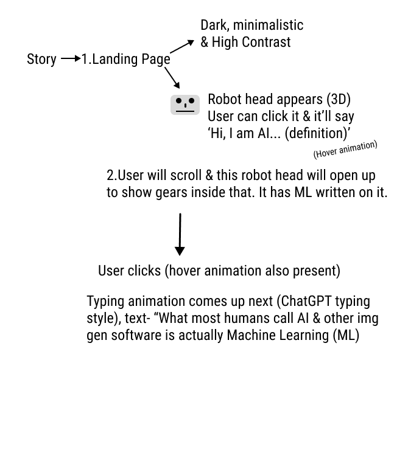
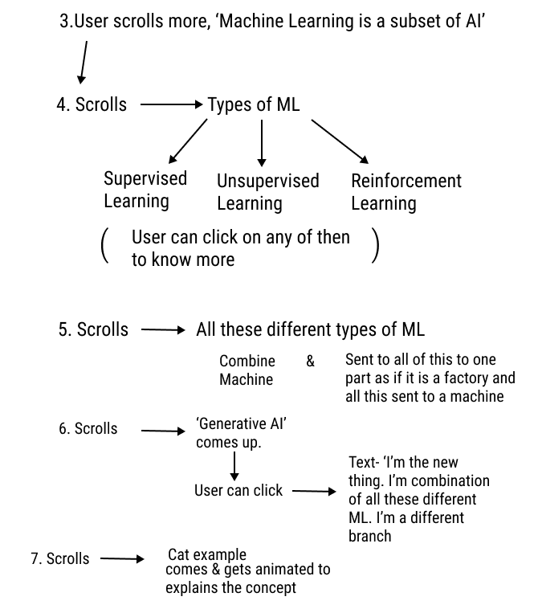
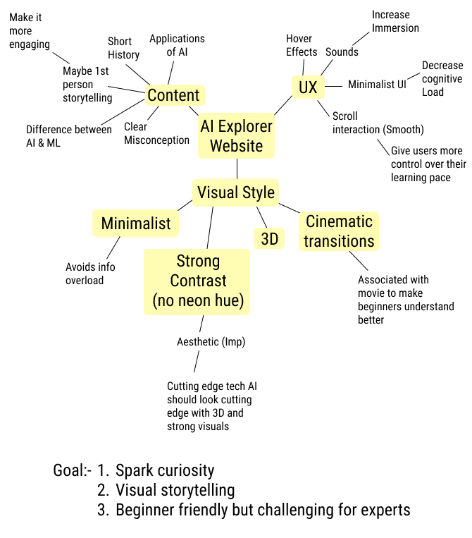
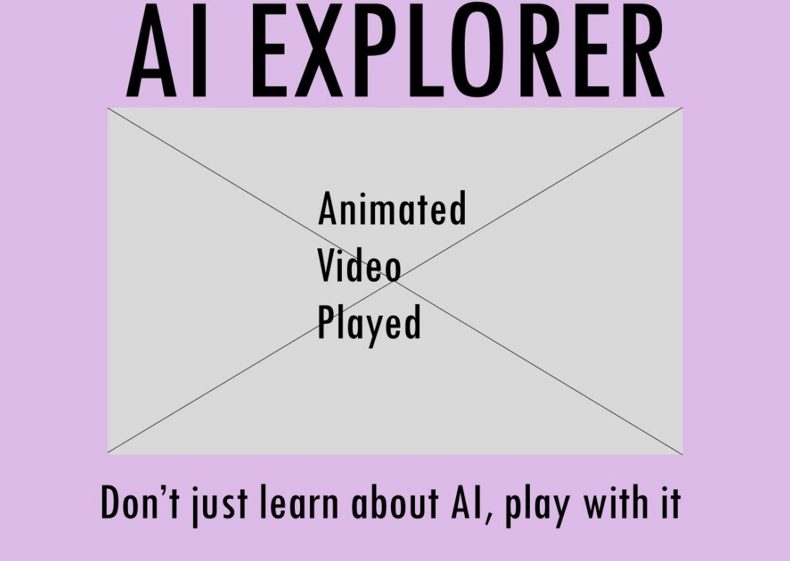

Case Study- Airbnb Co-traveller feature: Design Sprint
Overview
Fictional concept where Airbnb has introduced a new feature where travellers who don't know each other can book a stay together
Problem
Travellers on Airbnb struggle to find compatible co-travellers for shared stays, often leading to mismatched expectations and uncomfortable experiences. There is no streamlined way to discover and connect with like-minded individuals, making shared accommodation planning uncertain and inefficient.
Impact
- 80%4/5 successfully located and understood the cotraveller feature on their first attempt
- 100%Users who already use Airbnb reported they felt that they were using the real app while testing
Research

Goals identified
- Improve customer experience
- Improve customer saftey

Some important points
- User flow may get overcomplicated
- What if one of the travelers cancel last minute

Sprint Questions
- Add scroll trigger animation
- Be mindful of cognitive load while animating

How might We
- Add scroll trigger animation
- Be mindful of cognitive load while animating
Solution
Interactive visual storytelling seems like the perfect solution after visual research.
Planning the storytelling and content



- Scroll-based interaction helps users absorb information at their own pace.
- The head opens up and shows ‘machine learning’; the brain shows that ML is a part of AI.
- ML divides into 3 parts, showing it has three types within.
- All three parts wire into one GenAI, showing GenAI is a combination of all three.
- A visual depiction with a car example shows how GenAI actually works.
Wireframe



Final decided layout
I picked Dark and High Contrast because it drives engagement through stunning visuals and high-contrast lighting, while also reducing cognitive load through emphasis by contrast. Ultra minimalist felt overly restrained for this audience and content, like the IBM AI website I saw, and users learn better when the material is engaging. The dreamy layout risks losing users who would appreciate a more traditional, text-led website. Dark and High Contrast is the middle ground for all of these concerns.
Mockups


What we achieved
- Visual storytelling makes complex concepts more engaging. Uses visual hierarchy, animation and interactive storytelling to break down complex AI and machine learning concepts into more approachable, digestible information.
- Progressive interaction reduces information overload. New information is revealed progressively through user interaction rather than presenting everything at once, reducing cognitive load and allowing beginners to focus on one concept at a time.
- Scroll-driven learning gives users control over their pace. GSAP ScrollTrigger synchronises animations and content with the user’s scrolling, allowing them to progress through the material at their own pace rather than being overwhelmed by a large amount of information at once.
Trade-Offs

Some final changes
- Changed the colour of the brain and increased the saturation of the overall website.
Reason: In the last moments I felt the design looked dull in terms of colour, so I increased saturation. This also creates emphasis by contrast on the brain. - Removed a story element: the three wires connecting parts of ML to GenAI.
Reason: User feedback revealed that the persistent motion created visual clutter on smaller screens, distracting from the primary content.
Outcome
- Visual storytelling makes complex concepts more engaging. Uses visual hierarchy, animation and interactive storytelling to break down complex AI and machine learning concepts into more approachable, digestible information.
- Progressive interaction reduces information overload. New information is revealed progressively through user interaction rather than presenting everything at once, reducing cognitive load and allowing beginners to focus on one concept at a time.
- Scroll-driven learning gives users control over their pace. GSAP ScrollTrigger synchronises animations and content with the user’s scrolling, allowing them to progress through the material at their own pace rather than being overwhelmed by a large amount of information at once.
Impact
- Interactive content generates 52.6% more engagement than static content (Zayas 2025).
- 91% of buyers prefer interactive and visual content over traditional text-based media (Adams 2024).
- Interactive content can double conversion rates compared to static content (embryo 2024).
- 94% of first impressions are design-related (Sandu 2025).
- Well-designed UI can boost conversion rates by up to 200% (Sandu 2025).
References
- Adams, Alison. 2024. “Interactive Content Statistics: Facts and Trends [2025].” jobera. jobera.com/interactive-content-statistics
- embryo. 2024. “Stats proving the future of marketing is interactive content.” embryo. embryo.com/blog/interactive-content-statistics
- Sandu, Bogdan. 2025. “UI design statistics driving modern interface trends.” designyourway. designyourway.net/blog/ui-design-statistics
- Zayas, Tony. 2025. “Interactive Content Statistics.” insivia. insivia.com/interactive-content-statistics